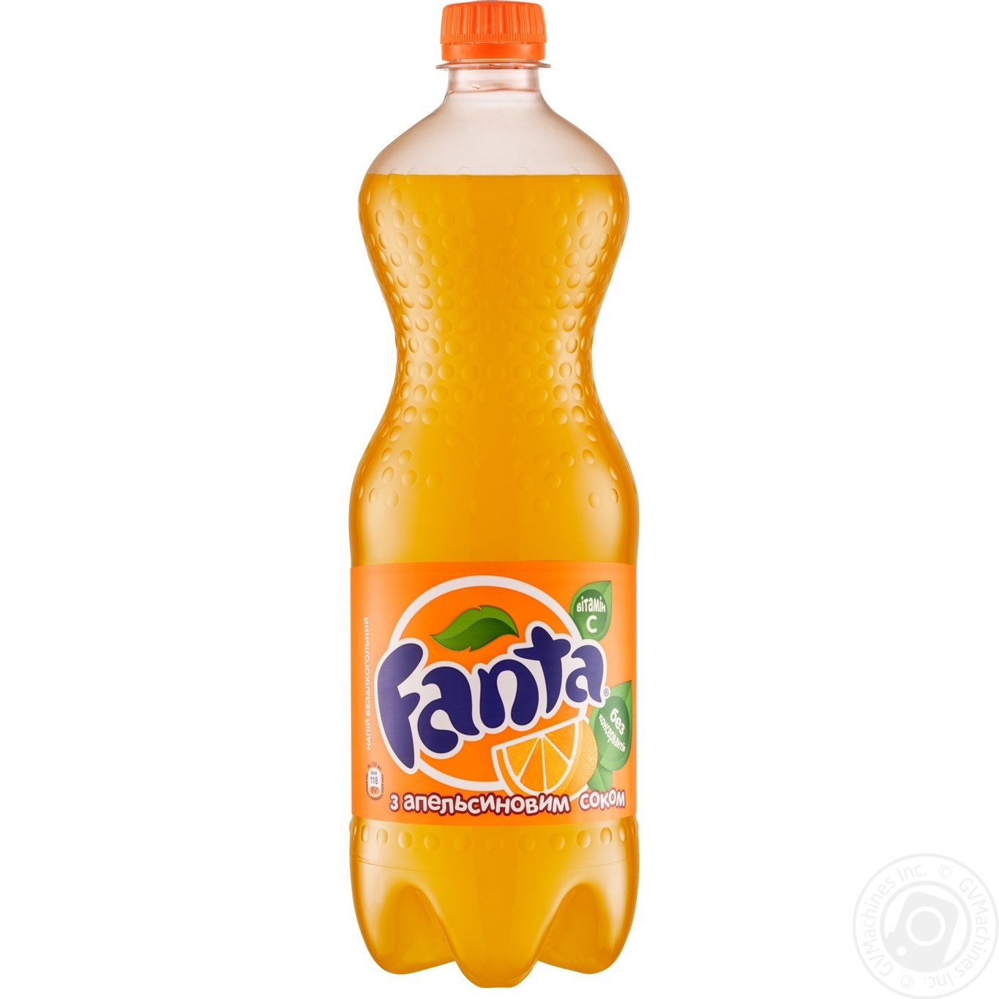

Енергетична цінність (на 100 г): 47 ккал
Харчова цінність (на 100 г): білки — 0 г, жири — 0 г, вуглеводи — 11.2 г
Об'єм порції: 500 мл (0.5 л.)
Класичний освіжаючий газований напій з яскравим апельсиновим смаком, що містить натуральний апельсиновий сік. Чудово доповнює будь-які гарячі та солоні страви.
Fanta — це популярний у всьому світі сильногазований безалкогольний напій з яскравим та насиченим фруктовим смаком. Завдяки вмісту натурального концентрованого апельсинового соку, Fanta дарує неповторний цитрусовий заряд бадьорості. Напій чудово втамовує спрагу та є ідеальним компаньйоном до піци, ролів та інших страв нашого меню.
Рекомендуємо пити напій охолодженим до температури +5°C...+8°C. Для найкращого смаку подавайте у склянці з льодом та скибочкою свіжого апельсина.
Зберігати при температурі від +5°C до +25°C, захищаючи від потрапляння прямих сонячних променів. Після відкриття пляшки зберігати в холодильнику та вжити протягом 24 годин.